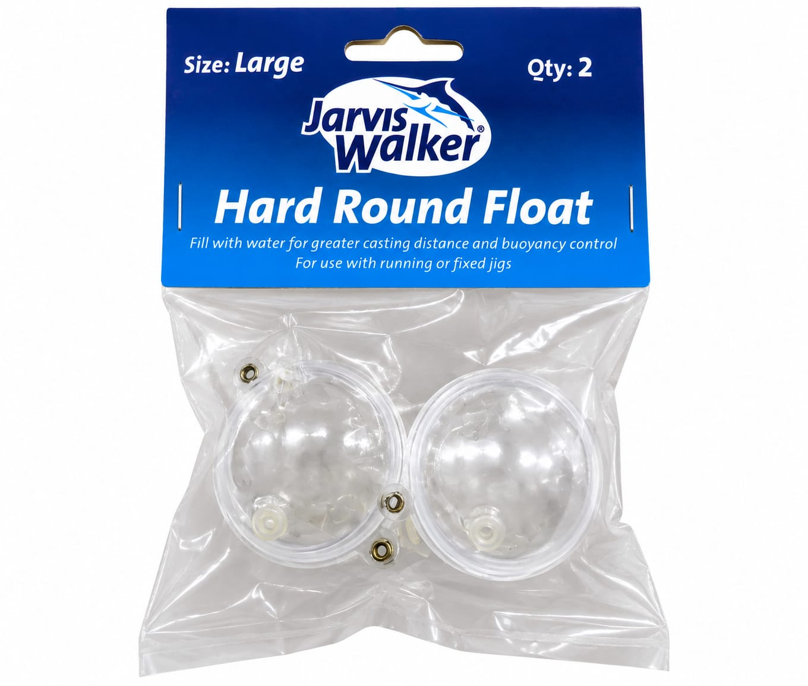

40mm
FLOTADOR BULBO 40 MM TRANSPARENTE x2
$2.000
FLOTADOR BULBO 40 MM TRANSPARENTE x2CARACTERÍSTICASMarca: Silver Wave o Jarvis WalkerModelo: Bulbo 40Tipo: Flotador bulbo regulable con aguaCARACTERÍSTICASDiámetro: 40 mmPeso sin agua: 8 g cada bulboPeso medio lleno con 15 ml de agua: 20 g cada bulboPeso lleno con 30 ml de agua: 32 g cada bulboFlotabilidad: flota en o bajo la superficie del aguaProfundidad: regulable según la cantidad de agua introducidaLanzabilidad: regulable mediante la cantidad de aguaTapones: dos tapones de goma para llenar o desaguarColor: transparenteMaterial: plásticoTerminación: dos ojetillos laterales de metal para pasar y fijar el nylonContenido2 unidades
MarcaSilver Wave o Jarvis Walker
ModeloBulbo 40
TipoFlotador bulbo regulable con agua
Peso sin agua8g cada bulbo